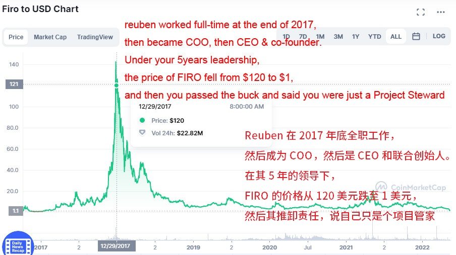

构建 FIRO 投票系统提案
通过主节点建立一个 FIRO 持有投票机制

业绩不言自明
Reuben 在 2017 年底全职工作，然后成为 COO，然后是 CEO 和联合创始人。在其 5 年的领导下，FIRO 的价格从 120 美元跌至 1 美元，然后其推卸责任，说自己只是个项目管家。
5 年来的表现如此糟糕，任何一个民主国家的首相和内阁都会被赶下台。
事实：
在 Reuben 的领导下，从 2017 年到现在，FIRO 价格在 5 年内从 120 美元下降到 1 美元，证明 Reuben 的想法和决定都是错误的。
在 Reuben 的领导下，隐私区块链项目成为一个公司实体（不负责长期持有者的所有者权益）。创始人、经理、开发人员、社区管理员和宣传人员都成为 FIRO 公司的员工。
在 Reuben 的领导下，利用开发基金建立一个独裁和高度中心化的组织。这是关于隐私区块链的最大笑话。
Reuben 不顾社区反对，强行将 Zcoin 改名为 Firo，并借机更改自己头衔为联合创始人。
Reuben 控制着开发基金的使用权，影响核心团队实施他错误的想法和决定（由市值下降证实，市值下降到排名 600 以下，而 Zcash 排名 40）。
在 Reuben 的领导下，谁能说清楚有多少人是真正的 FIRO 长期持有者，有多少人是麻烦制造者，有多少人是论坛 ID 背后的敌人？或者隐藏在论坛 ID 背后，以隐私的名义做一切事情来破坏 Firo。（Reuben 能否摆脱疑问，有多少 ID 是你的发言人，有多少是水军和付费发帖者？）
我们应该做什么？
通过主节点建立一个 FIRO 持有投票机制。
只有持续时间超过 1 年的主节点才有投票权，一个主节点一票。（如何定义「持续时间超过 1 年」：主节点必须持续运行，永不中途停止；一旦停止或中断，无论任何原因，失去投票权，必须重新计算连续运行 1 年）
在论坛中，只有主节点的所有者可以打开投票主题。
所有的投票线程必须得到 50% 以上的投票通过。
重大决定，如尾部发行，必须得到 80% 以上的投票同意。
这样做有什么好处？
建立明确的产权责任制度。
增加 FIRO 持有量，锁定主节点，减少市场上的倾销，有利于稳定 FIRO 价格。
现在的 FIRO 价格非常非常低，低得令人难以置信，拥有一个主节点只需要 1000 到 1500 美元。这对论坛中所谓的小投资者建立一个或多个主节点是非常非常友好的。
由于建立了正确的投票机制，长期储户不再担心自己的权益会被论坛里的独裁者或傻瓜破坏。
隐私币的最后买家是那些长期持有隐私币的人；隐私币最大的价值是储存财富，其次是隐私支付。只有那些不担心财富受到伤害的长期储户才会把越来越多的钱储存到 FIRO 中。最后，他们成为大储户拥有许多主节点将决定他们自己的 FIRO 的价格。这就是自然的自我反馈和正反馈。
只有富人才需要在隐私区块链中隐藏他们的财富；没有银行存款的人，甚至没有 1000 到 3000 美元来购买一个或多个主节点，他们根本就不是 FIRO 的目标群体。
现在，对于论坛中的小投资者来说，与你污名化的大户相比，你处于完全不平等的绝对优势地位；你只需要花十分之一（Firo 长期持有者成本 10 美元）甚至百分之一（Zcoin 持有者成本 100 美元）的钱来建立一个主节点。